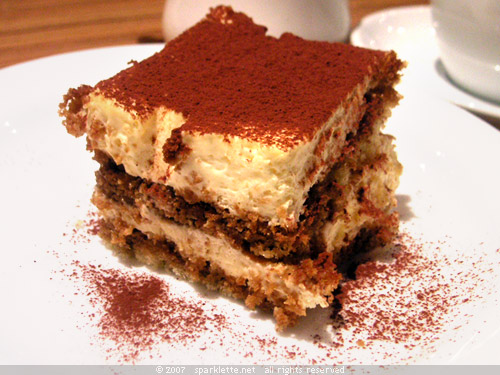

หน้า 23 จากทั้งหมด 33

โพสต์แล้ว:
จันทร์ 11 ก.พ. 2008 1:02 amโดย ECO
ยังคงความฮาเหมือนเดิม :lol:
โพสต์แล้ว:
จันทร์ 11 ก.พ. 2008 10:24 amโดย ECO
วาดยูกิจังได้เหมือนมากๆๆ เหมือนเป็นตัวละครที่ลงเส้นมากที่สุดตั้งแต่ดูมา อิอิ
แต่ชอบสุดตรงมิโกะเล่นกระดานโต้คลื่น
ฮามากๆ โฮะๆ
โพสต์แล้ว:
จันทร์ 11 ก.พ. 2008 12:20 pmโดย ECO
:lol: เมพจริงๆ
โพสต์แล้ว:
จันทร์ 11 ก.พ. 2008 4:32 pmโดย ECO
เฮ้ย ฮาอะ 555555555+
กร๊ากๆๆๆๆ
นับตอนยิ่งวาดภาพสวยนะคับ
วาดได้เหมือนมากๆๆ :lol:
โพสต์แล้ว:
จันทร์ 11 ก.พ. 2008 10:29 pmโดย ECO
ฮาสุดๆเลยมุกนี้
โพสต์แล้ว:
อังคาร 12 ก.พ. 2008 3:50 pmโดย ECO
ก......การ์ดเรียกหมู
เกมส์ลงทัณฑ์
ยูกิโอ
แม่เจ้า มุกทันสมัย ล้อเลียน ภาษาเจ็บๆ ยังมีให้ชมทุกครั้ง
โพสต์แล้ว:
อังคาร 12 ก.พ. 2008 4:15 pmโดย ECO
55555555555555555555555+
โอ๊ย ยิ่งวาดยิ่งถูกใจ
โพสต์แล้ว:
อังคาร 12 ก.พ. 2008 7:42 pmโดย ECO
ของเขาแรงจริงๆ
/me หนีไปตั้งหลัก .......
Perfect Wall !! :oops:
โพสต์แล้ว:
อังคาร 12 ก.พ. 2008 8:46 pmโดย ECO
/เก้กเสียงหล่อ "แม้แต่กำแพงอันสูงใหญ่นี้ ก็ไม่อาจกั้นจิตใจอันเชื่อมั่นได้หรอกนะ"
หมูทะลุกำแพงเด้อ กันบ่ได้ :lol:
แปะไว้เฉยๆ ทีรามิสึ น่ากิน น้ำยายใหย

เสือกินนมหมา

โพสต์แล้ว:
ศุกร์ 15 ก.พ. 2008 1:37 amโดย ECO
ชอบจัง วาดมาอีก เยอะๆ น้า ตะเอง :oops:
โพสต์แล้ว:
ศุกร์ 15 ก.พ. 2008 7:21 pmโดย ECO
อยากให้กระโห้มีบทเยอะๆง่ะ ชอบลายเส้นที่ท่านวาดกระโห้มักมาย *w*
โพสต์แล้ว:
เสาร์ 16 ก.พ. 2008 1:02 amโดย ECO
เอาอีกค๊าบบบบบ
^0^
ผมว่าคุณ Belmont วาดรูปสวยนะ
คิดว่าแค่ใช้โปรแกรมไม่คล่อง (มั้ง)
ซักตอนที่ 100 คงวาดเป็น 4 สีได้ ( ยุให้ถึง 100 ตอน อิอิ :lol: )
โพสต์แล้ว:
เสาร์ 16 ก.พ. 2008 1:11 amโดย ECO
เมื่อก่อนใช้แต่ดินสอ พู่กันง่ะ แล้วก็เลิกไป 10 กว่าปีได้
กลับมาอีกทีนึกคลึ้มก้เลยจับเมาส์วาดเลย เละเทะอย่างที่เห็น :lol:
ปลาเกย์เล่นกล้ามมีไรดีนะ คนชอบมันจัง :lol:
ดูดีๆ ผมวาดกะโห้ลืมวาดหาง บางภาพไทนี่ลืมวาดหู :lol:
โพสต์แล้ว:
อังคาร 19 ก.พ. 2008 7:04 pmโดย ECO
" ลบทิ้งให้แล้วค๊าบ... ขออภัยค๊าบ.. ไปล่ะแว่บ..!! "
โพสต์แล้ว:
อังคาร 19 ก.พ. 2008 7:20 pmโดย ECO
ก๊าก พี่ชายเรน น้องชายกั๊กแวะมาอ่านนะค้าบ
555+++
สมน้ำหน้าตาแพนด้าเลย